Crossover · bannière spéciale
Chainsaw Man
Une bannière à part, rangée dans l'onglet Familiers de l'invocation, sous Crossover, avec 14 personnages de Chainsaw Man — ceux de la première saison de l'animé et du film Reze, rien au-delà. Ils se jouent comme tous les familiers : en miniature sur vos talons, et d'une touche à leur vraie taille. Elle reste ouverte tant que le crossover est dans le mod ; ceux que vous avez obtenus restent à vous.

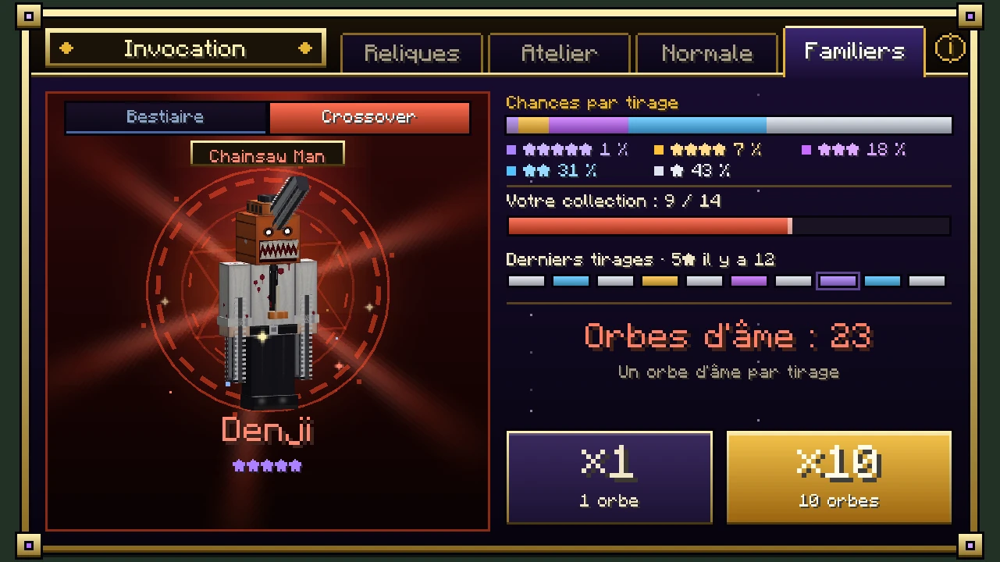
(agrandir l'image)
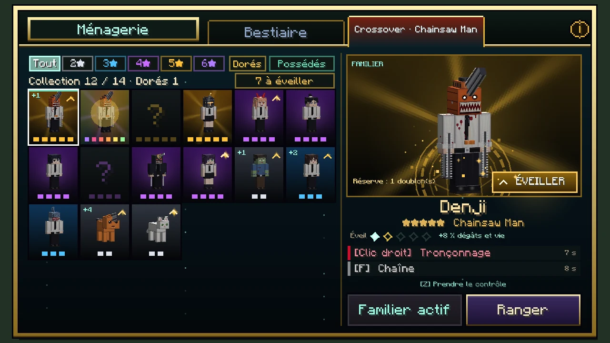
(agrandir l'image)
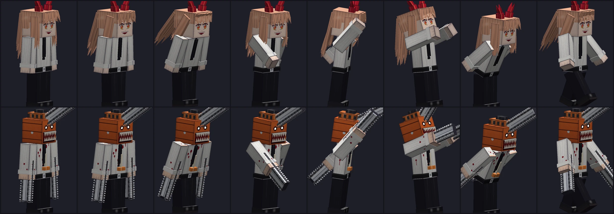
(agrandir l'image)- Les taux du Bestiaire : 5★ 1 %, 4★ 7 %, 3★ 18 %, 2★ 31 %, 1★ 43 %. Un tirage tombe sur n'importe quel personnage de ses étoiles, chacun avec la même chance.
- Comme partout, 0,1 % des tirages sortent dorés : un personnage tiré au hasard parmi tous ceux de la bannière, entièrement en or.
- Leurs corps, leurs peaux et leurs compétences sont faits pour le crossover : les tronçonneuses de Denji vrombissent, chaîne dentée comprise ; le fusible du Démon Bombe brûle ; le sabre de Katana Man sort de son front.
- Un personnage peut avoir deux formes : Denji suit son maître sous la forme de Pochita et devient Chainsaw Man quand on le prend en main ; la Reze 5★ suit en jeune fille et devient le Démon Bombe. La Reze 4★, elle, reste la fille du café.
| Personnage | Étoiles | Surnom | Compétences |
|---|---|---|---|
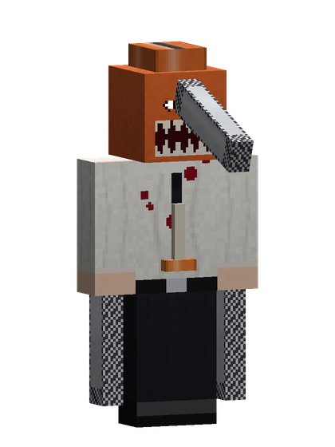 Denji | ★★★★★ | Chainsaw Man | Tronçonnage — Sept coups de tronçonneuse en rafale ; le sang qui gicle le soigne un peu. · Chaîne démarreur — Lance la chaîne de son démarreur sur l'ennemi visé, s'y hisse d'un coup et le tronçonne à l'arrivée. En familier, il vous suit sous la forme de Pochita. |
| Makima | ★★★★★ | Cheffe de la Section spéciale 4 | Pan ! — Pointe du doigt l'ennemi visé : « Pan ! ». Il brille un instant, puis il est écrasé là où il se trouve, même s'il a fui. · Regard — Un regard qui fait plier : faiblesse et lenteur. |
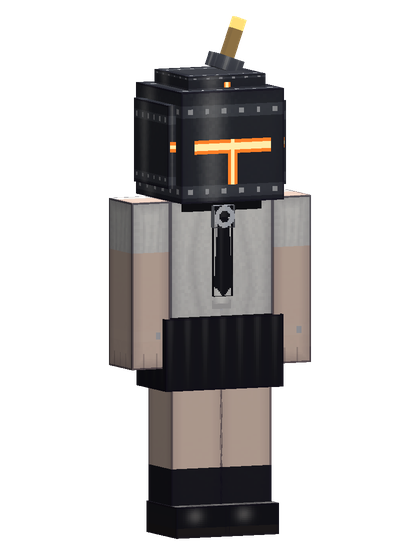 Reze | ★★★★★ | Démon Bombe | Chapelet de bombes — Tire la goupille : six explosions s'enchaînent droit devant, de plus en plus loin. Les blocs n'y perdent rien. · Propulsion — Se propulse d'une explosion et retombe en déflagration. En familier, elle vous suit sous sa forme humaine ; prise en main, elle devient le Démon Bombe. |
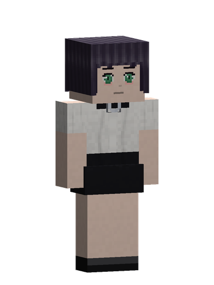 Reze | ★★★★ | La fille du café | Fleur explosive — Glisse une fleur sur l'ennemi visé avec un sourire : elle éclot en explosion un instant plus tard, où qu'il soit. · Leçon de natation — Plonge et ressort plus loin, insaisissable un instant. |
| Power | ★★★★ | Démone du Sang | Marteau de sang — Abat son marteau de sang : la terre se fend en quatre coups qui avancent droit devant et projettent tout en l'air. · Lance de sang — Une lance de sang ; le sang versé la soigne. |
| Aki Hayakawa | ★★★★ | Chasseur de démons | Kon ! — La gueule du Démon Renard surgit et referme ses crocs. · Malédiction — Plante un clou maudit dans l'ennemi visé : deux secondes plus tard, la main du Démon Malédiction l'étreint, où qu'il soit. |
| Himeno | ★★★★ | Alliée du Démon Fantôme | Main du Fantôme — Une main invisible saisit l'ennemi et le ramène. · Étreinte invisible — Des mains invisibles serrent tout ce qui est devant. |
| Kishibe | ★★★★ | Le plus fort des chasseurs | Couteaux — Huit coups de couteau d'un vieux maître. · Instinct du vétéran — Esquive tout 2 s, puis frappe plus fort et plus vite. |
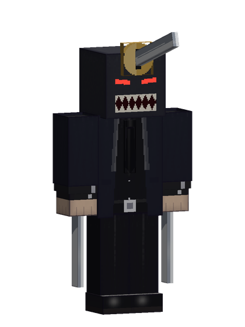 Katana Man | ★★★★ | Hybride du Sabre | Iaijutsu — Dégaine et tranche tout sur sa route en un éclair. · Tempête de lames — Quatre lames tournoient autour de lui pendant trois secondes et taillent tout ce qui approche. |
| Kobeni | ★★★ | Chasseuse malgré elle | Esquive — Esquive tout 3 s, puis file à toute vitesse. · Danse du couteau — Cinq coups de couteau, affolés mais précis. |
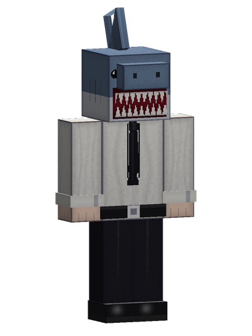 Beam | ★★★ | Démon Requin | Nage dans le sol — Plonge dans le sol, file et jaillit sous l'ennemi. · Morsure de requin — Une morsure à pleines dents. |
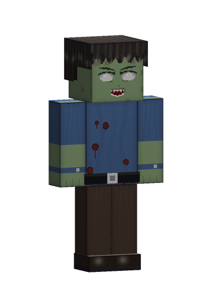 Zombie | ★★ | Serviteur du Démon Zombie | Étreinte putride — Agrippe, affame et affaiblit. |
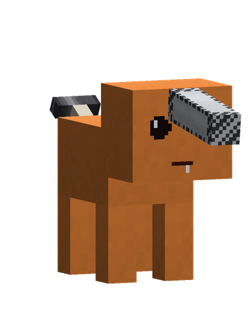 Pochita | ★ | Démon Tronçonneuse | Petit vroum — Un petit coup de tronçonneuse. |
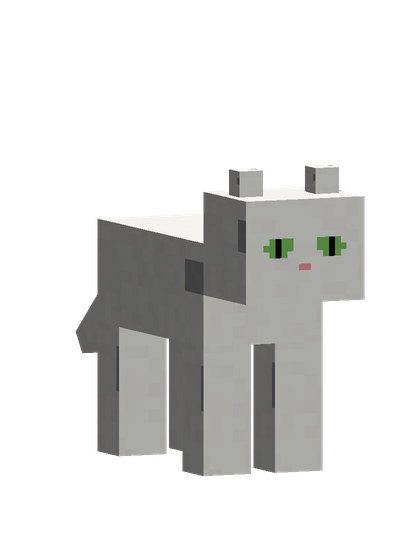 Meowy | ★ | Le chat de Power | Ronron — Ronronne : se soigne un peu. |